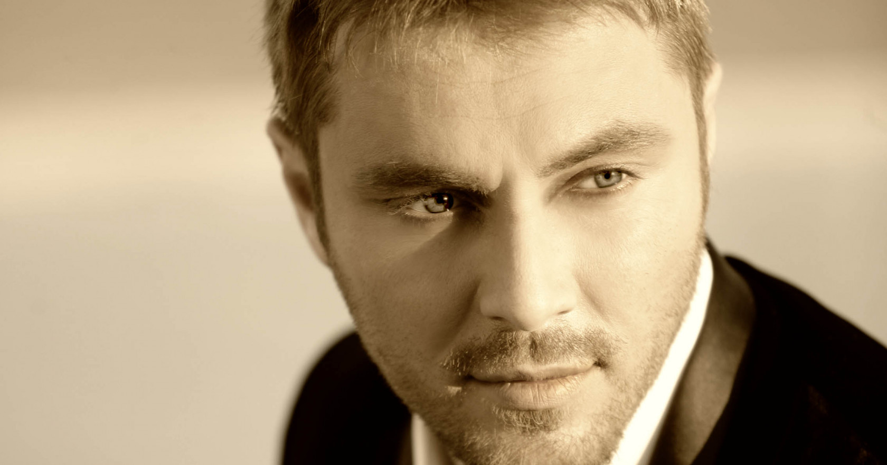

България в Eurovision Song Contest
Miro
Мирослав Димов Костадинов е роден на 10 март 1976 г. в Добрич и е шестото участие на България в
Евровизия.
От 1994 до 1999 г. Миро печели награди на 11 престижни международни фестивала.
През 1999 г. Галена
Курдова и Миро стартираха проект, наречен по-късно KariZma.
Всички песни от този дует станаха хитове
в
България.
След 7 години на върха на класациите, дуетът Karizma издава първия си албум Eklisiast.
Една
година по-късно Миро започва соловата си кариера и след няколко месеца става певец номер 1 в
България.
В
кариерата си Миро е печелил всички престижни музикални награди на българските топ медии.
Той издава
първия си самостоятелен албум през 2009 г. oMIROtvoren, който достига рекорд в продажбите след първата
седмица на пазара.
Миро е създал и свой собствен лейбъл - David & Light Entertainment. През 2009 г. той
предприема успешно национално турне, на което присъстват хиляди негови фенове.
